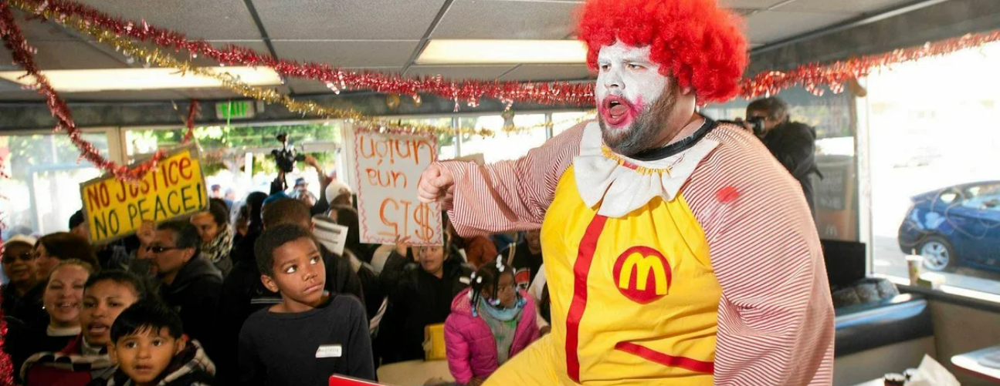

О нас
История DE Food
Всё началось с простой идеи: создать место, где можно быстро и вкусно перекусить, не жертвуя качеством. DE food родился из моей любви к фастфуду и желания предложить что-то особенное. Я всегда мечтал о месте, где каждый мог бы найти что-то по вкусу, от классических бургеров до оригинальных закусок.
Наше вдохновение
Вдохновение пришло из путешествий по разным странам и знакомства с местными кулинарными традициями. Я хотел объединить лучшее из разных кухонь, чтобы создать уникальное меню. Каждый рецепт – это результат долгих экспериментов и поисков идеального сочетания вкусов.
Наша миссия
Наша миссия – радовать вас вкусной и быстрой едой, приготовленной с любовью и заботой. Мы используем только свежие ингредиенты и постоянно работаем над улучшением нашего меню. Мы хотим, чтобы каждый визит в DE food был для вас маленьким праздником.
Присоединяйтесь к нам!
Спасибо, что выбрали DE Food! Мы надеемся, что вам понравится наша еда и атмосфера. Присоединяйтесь к нам в социальных сетях, чтобы быть в курсе всех новостей и акций. Будем рады видеть вас снова и снова!
наш любимец😘